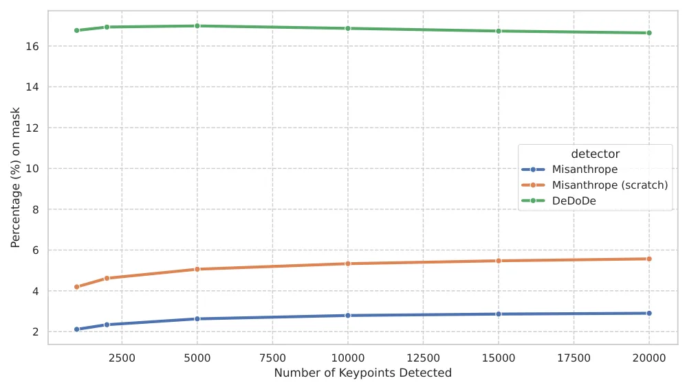

Misanthrope：隐私保护关键点检测器Misanthrope: A Privacy-Preserving Keypoint Detector
A 级 robust state estimation/visual localization，直接处理特征泄露、错误匹配和分布式视觉系统的隐私风险。
一句话工作总结
这是可靠视觉定位的鲁棒性与隐私侧观察项：把风险抑制前移到特征产生阶段，而不是事后模糊化。其关键实验同时涉及匹配质量、特征反演和人物避让，适合扩展到共享地图的安全评测。
半海报（待补全）
当前记录尚未达到完整海报质量门槛，暂不把摘要或评分理由冒充方法/实验结论。
待补字段：桥接价值、方法摘要、可迁移模块、关键证据与数字、边界与风险、下一步实验。下一次任务需从论文全文或官方 HTML 提取证据后再发布。
摘要
Misanthrope 通过自蒸馏训练关键点检测器，主动避开人物区域，以降低分布式视觉定位中局部特征反演和身份重识别风险。作者报告在保持匹配性能的同时，在含人物干扰的场景中改善了特征提取。
Image matching is a core component of applications such as Simultaneous Localization and Mapping (SLAM), Visual Localization, and Structure from Motion (SfM). However, the local image features central to this task are vulnerable to inversion attacks, which enable adversaries to reconstruct privacy-sensitive scene content from local features. These attacks pose a particular threat in distributed computing scenarios where the pre-computed features leave edge devices to be processed by remote servers. In this work, we introduce Misanthrope, a novel privacy-preserving keypoint detector trained through self-distillation to avoid detecting keypoints on people---a predominant source of privacy-sensitive content in most localization scenarios---thus mitigating inversion attacks at the source rather than through post-hoc obfuscation. We demonstrate how inverted images from traditional feature detection pipelines can be used to detect and re-identify people in the scene, while Misanthrope is able to mitigate these attacks. Furthermore, Misanthrope maintains image matching performance on par with the state of the art and even surpasses it in challenging settings where people act as distractors, such as phototourism and in-the-wild odometry. On the Image Matching Challenge 2021 Phototourism test set, Misanthrope is the top-performing sparse feature extractor in 7 out of 9 scenes. We make our model and its evaluation script available here: https://github.com/fratopa/misanthrope
图表/页面预览

{kind=link}
